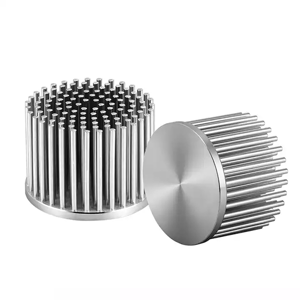
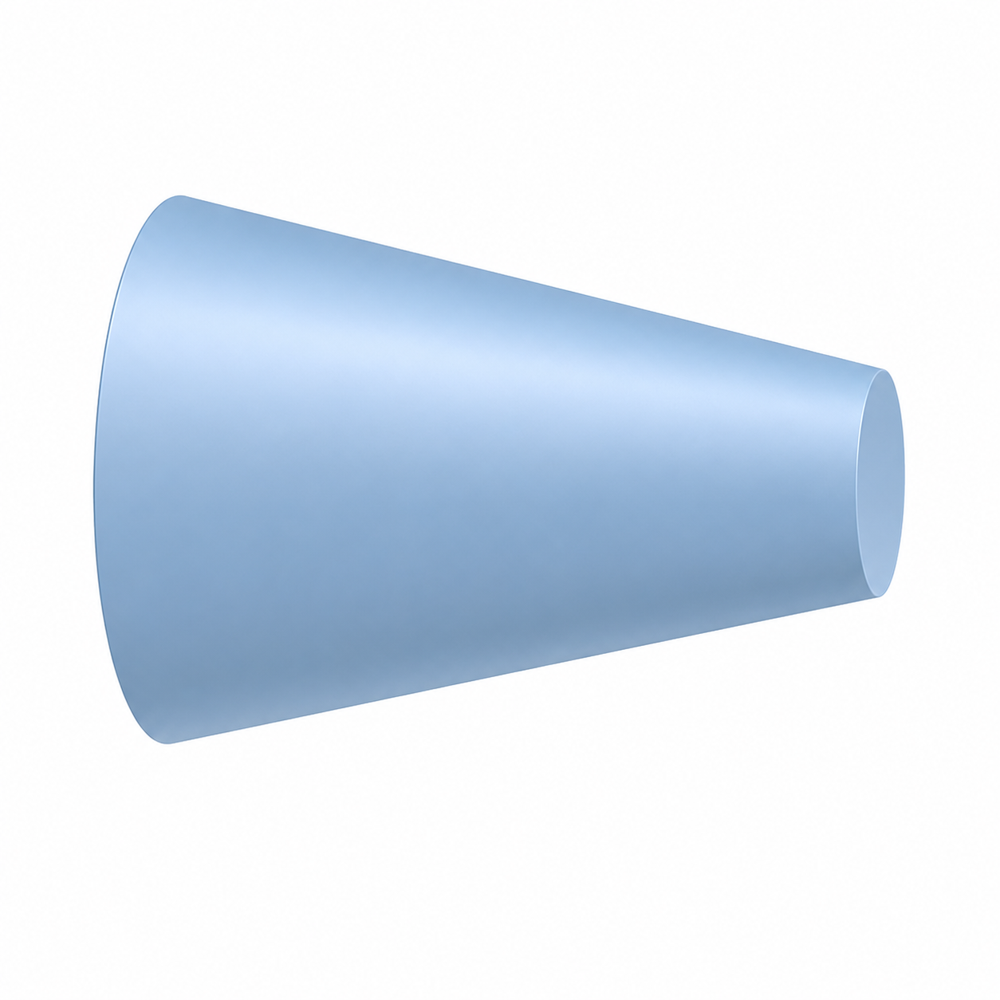
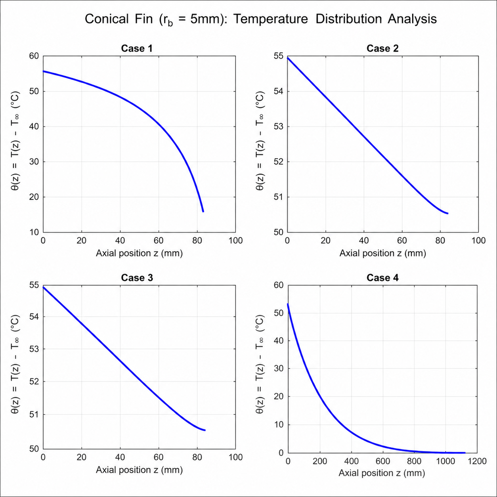
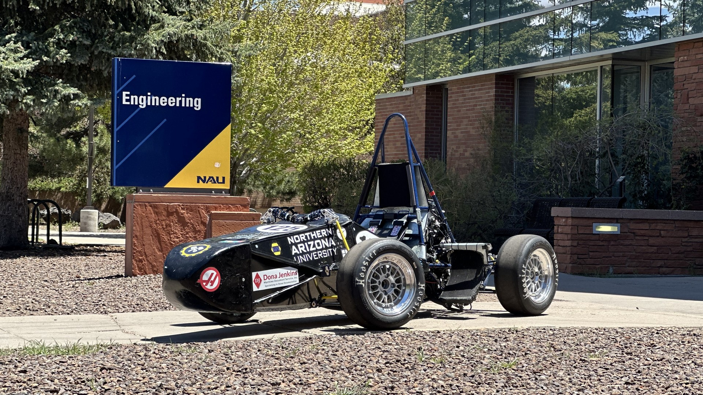
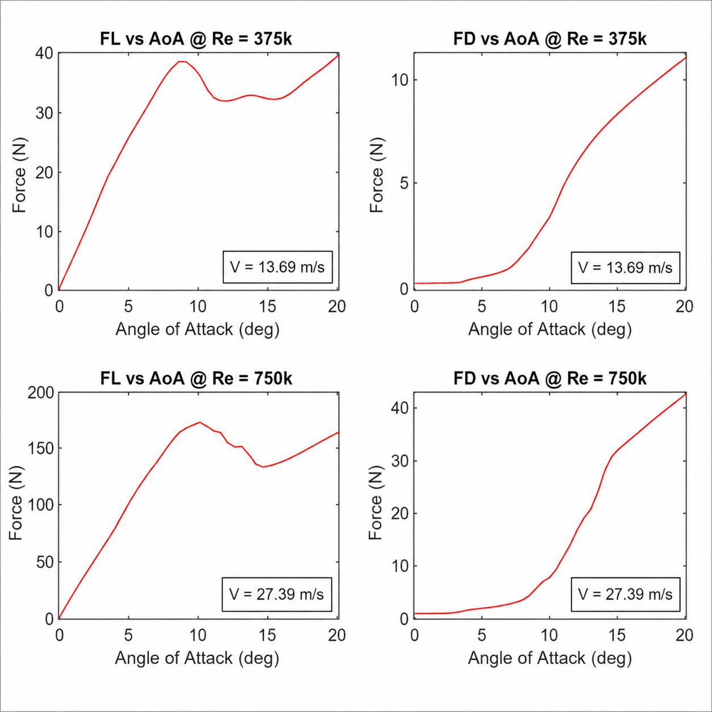
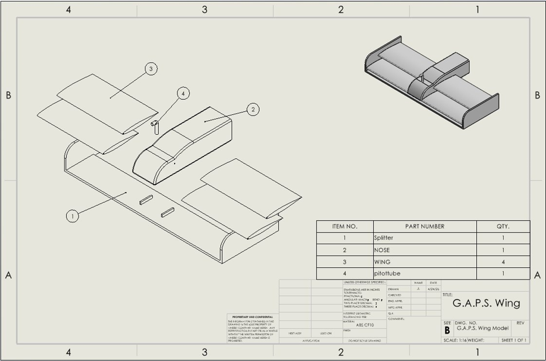

Passionate about algorithms and mechanical engineering, I try to use my knowledge and abilities to bridge the gap between practical engineering concepts and data analysis
A generalized pin fin heat transfer algorithm that predicts thermal performance across varying cross-sectional geometries and end conditions, enabling flexible, accurate analysis for thermal design applications using analytical fin efficiency modeling and parameterized boundary condition formulations.
Heat dissipation is a fundamental challenge in thermal engineering, where the geometry of a cooling surface can mean the difference between efficiency and failure. This project was motivated by the need to accurately predict heat transfer behavior across pin fins under varying cross-sectional profiles and boundary conditions.

I developed a generalized pin fin analysis algorithm capable of modeling conductive-convective heat transfer across arbitrary cross-sectional geometries — focused around conical and cylindrical fins — while accommodating a range of end conditions such as insulated tips, convective ends, and prescribed base temperatures. By performing nodal analysis across the fin with varying nodal counts until certain accuracy conditions were met, I was able to identify and quantify heat transfer throughout the fin.

The algorithm produces heat transfer rate predictions and the fin's temperature distribution adaptable to any geometry-condition pairing, offering a flexible tool for thermal design optimization. Through this work, I deepened my understanding of nodal analysis and reinforced concepts I had learned through my studies. In the future, I will create a GUI for a better user experience.

To improve the NAU Formula SAE team's aerodynamic package, my team and I designed a front wing active aero system to maximize downforce on turns and minimize drag on straights
The NAU Formula SAE team has no aerodynamic features, so implementing a front wing active aero system, along with additional aerodynamic features, can improve competition performance

As data analysis lead, I was tasked with identifying a suitable airfoil profile and determining optimal angle of attack for turns and straights. After choosing an airfoil, I performed an analysis of downforce and drag across varying angles of attack between 0 and 20 degrees. From this I determined the optimal angles of attack and the resulting forces were applied to additional engineering analyses.

The resulting wing produced an approximate downforce of 76 Newtons while turning and almost 0 Newtons of drag on straights. Considering that the NAU Formula SAE team had no aerodynamic packages to begin, implementing this system would provide a large performance increase. This project allowed me to apply my knowledge of aerodynamics and fluid mechanics to a physical design, with the intention of implementing into a real vehicle.
